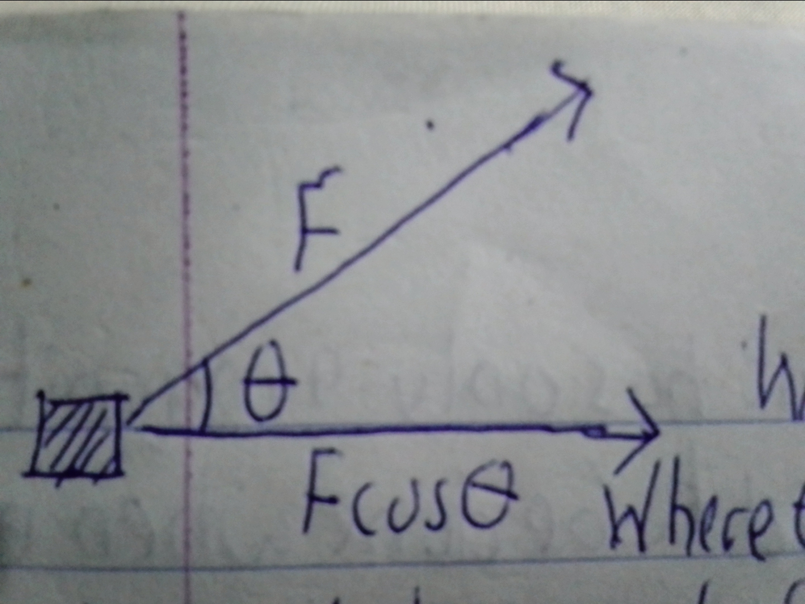

Work
Work is a scalar quantity that has only magnitude but not direction. Work is said to be done when energy is expended.
Work is the product of the force and displacement. Work has unit Joule.
Energy
Energy is the capability of an object to do work. The types of Energy are:
- Kinetic Energy
- Potential Energy
- Chemical Energy
- Sound Energy
The unit of Energy is the Joule
The order of vectors is then given by: O = Vector(A) × Vector(B) x cos(Angle between them)
O = Vector(A) × Vector(B) × cos(θ)
Work done = f × cosθ
Work done by an external force on a body is the product of the force and the displacement x, provided that the force is in the direction of the displacement.
w = f.s
If the force acts at an angle θ to the displacement, the work done is the resolved component of the force along the direction of the displacement multiplied by the displacement.
The graph of the force against the displacement
Hence, the workdone is defined as the scalar product of force F that moves its point of application through a displacement S.